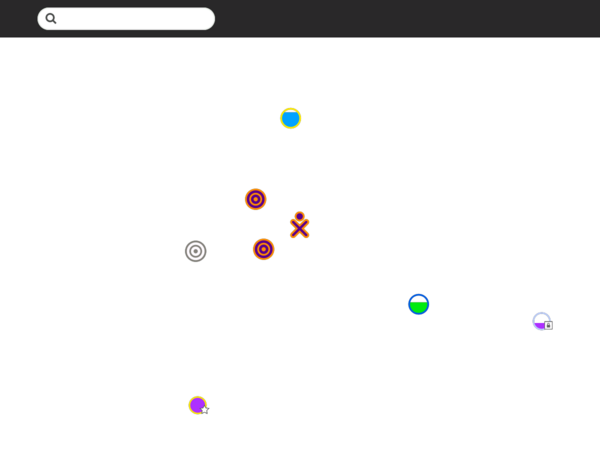
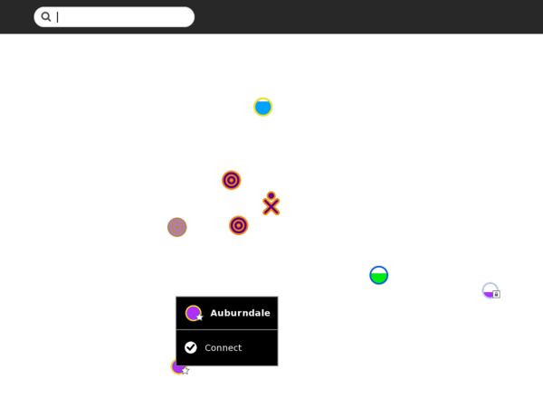
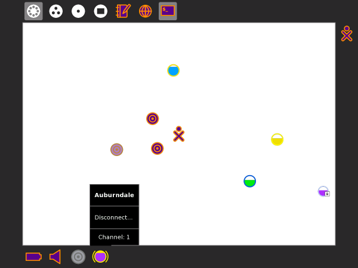
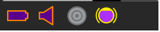
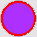
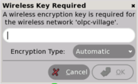

| Réseaux et Internet | Index | Donnez-moi Internet, s'il vous plait ! |
L'un des buts premiers de la plateforme d'apprentissage Sugar est de permettre aux élèves d'apprendre et travailler ensemble.
Dans un environnement réseau sans fil, le point d'accès (AP) est un dispositif permettant à votre ordinateur de se connecter à un ensemble de dispositifs de communication. Le point d'accès possède généralement une connexion directe à Internet, et peut relayer des données entre les dispositifs sans fil et les dispositifs auxquels il peut accéder.
Vous pouvez vous connecter depuis la Vue de Voisinage. Vous pouvez voir des informations sur la connexion dans le Cadre.

Allez sur la Vue de Voisinage pour vous connecter à un point d'accès.
Astuce: Pour accéder à la Vue de voisinage, cliquez sur l'icône Voisinage dans le Cadre ou pressez la touche F1.

Les cercles représentent les Réseaux (point d'accès) dans la Vue de Voisinage. Passez sur un cercle avec pour avoir plus d'informations au sujet de ce point d'accès. Un point d'accès émet un nom (ESSID) qui permet de l'identifier. Un point maillé d'ordinateur portable OLPC - représenté par une série de cercles concentriques - est identifié par son numéro de canal (1,6 ou 11). Vous pouvez aussi chercher un point d'accès par son nom dans la barre de recherche en haut de la page.
Note: Si un point d'accès n'émet pas son nom, la Vue de Voisinage peut vous indiquer son point d'accès (AP) sous un autre nom.
Le niveau de remplissage du cercle indique la force du signal du point d'accès qui lui est associé. La couleur du cercle est basée sur le nom du point d'accès. Une icône cadenas signale un réseau sécurisé demandant un mot de passe pour y accéder. Une icône "étoile" signale un point d'accès ayant déjà été utilisé (favoris).
Pour activer une connexion réseau, cliquez une fois dans le cercle qui correspond au point d'accès que vous aurez choisi (ou cliquez sur l'option Connecter dans le menu déroulant).
Tandis que la connexion s'établit, l'intérieur du cercle clignote. Une fois qu'elle est établie, le bord inférieur du Cadre contiendra son icône. Si, pour une raison quelconque, la connexion ne se fait pas, le cercle arrêtera de clignoter. Parfois, il est nécessaire d'essayer plusieurs fois avant que la connexion ne s'établisse.
Si le point d'accès est sécurisé et demande un mot de passe, une boîte de dialogue apparaît vous demandant l'information requise. Différents points d'accès peuvent demander différents mots de passe. Avant d'entrer le mot de passe, assurez-vous d'avoir sélectionné le type de mot de passe correct dans le menu déroulant.
Un menu déroulant détaille le statut de la connexion.
En passant sur l'objet, un menu détaille le statut de la connexion.

Vous pouvez vérifier l'état de votre connexion dans le Cadre (depuis n'importe quelle vue). En faisant glisser votre curseur sur l'icône cercle, vous pouvez voir apparaître des détails sur l'état de la connexion dans le menu déroulant.
OLPC a conçu un réseau maillé qui permet aux portables XO de communiquer sans la présence d'Internet et a conçu un serveur d'école afin de rendre leur connexion plus efficace. Le serveur d'école fournit également des services web et de chat.
La collaboration entre les élèves est l'une des caractéristiques les plus importantes de Sugar. Pour permettre la collaboration dans une salle de classe ou chez soi, il est nécessaire d'établir le même type de connexion pour chacun des ordinateurs. Les ordinateurs peuvent être connectés à un serveur d'école, à un réseau maillé simple si ce sont des XO OLPC, ou à un point d'accès.
Lorsque les ordinateurs utilisent un point d'accès pour la connexion, ils doivent tous utiliser le même serveur Jabber afin de pouvoir collaborer. Référez-vous de préférence à la discussion du panneau de contrôle Sugar dans le chapitre Personnaliser Sugar pour plus de détails concernant la configuration de Jabber.
| Vous vous connectez depuis la Vue de Voisinage | |
| 
|
Votre statut actuel de connexion est indiqué dans le Cadre. De plus, le menu déroulant indique "Connecté". Parfois, il faut faire 2-3 essais avant d'arriver à se connecter. Pour déconnecter, sélectionnez "Déconnecter" dans le menu déroulant qui apparaît chaque menu de statut de réseau (Voyez l'étape 4 ci-dessus). |
| Les cercles représentent des points d'accès. Le taux de remplissage indique la force du signal. | |
| Les points d'accès nécessitant un mot de passe comportent une icône cadenas. La couleur du cercle est calculée selon l'ESSID du point d'accès. Le nom du point d'accès s'affiche lorsque vous glissez votre curseur sur lui. | |
| Les points d'accès "Favoris" ont une étoile. | |
|  | Vous vous connectez en cliquant sur le centre du cercle. Celui-ci clignote lorsque le portable essai de se connecter. |
| Une fois que la connexion est établie, l'icône est entouré par des parenthèses. | |
| Si vous utilisez un ordinateur XO OLPC, les points maillés sont représentés par une série de cercles concentriques. La couleur du point maillé est la même que la couleur de votre XO. Si votre XO est "compatible maille" et que vous ne vous êtes connecté à un point d'accès, il se joindra automatiquement au réseau simple maillé, vous permettant ainsi de collaborer avec d'autres ordinateurs sur le réseau maillé, mais pas nécessairement d'accéder à Internet. | |
|  | Si le point d'accès requiert un mot de passe, il vous sera demandé de l'y inscrire. |
| Réseaux et Internet | Index | Donnez-moi Internet, s'il vous plait ! |